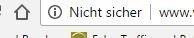
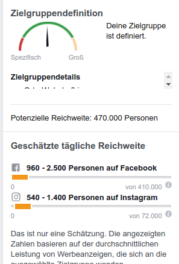

Noch kein HTTPS? Wenn der Browser vor ihrer Website warnt
Lesedauer: ca. 4:30 Minuten28.03.2017 - Google will, dass User sicher im Netz surfen. Deswegen zeigt der hauseigene Browser Chrome seit Januar 2017 gut sichtbar an, dass eine Website „Nicht Sicher“ ist, wenn diese Passwörter oder Kreditkarten abfragen will und nicht das dafür vorgesehene Protokoll HTTPS verwendet. Das stellt Webseitenbetreiber vor die anspruchsvolle Aufgabe, die eigene Site fit für das sichere Übertragungsprotokoll zu machen. Dieser Artikel ist ein Einstieg in das Thema und liefert erste Anhaltspunkte zur Planung der Umstellung.
Die Ausgangslage
Wenn ihre Website die Eingabe von Passwörtern vorsieht, weil sie z. B. einen geschützten Mitgliederbereich eingerichtet haben oder sogar die Zahlung mit Kreditkarte für ihre Kunden möglich ist, dann haben sie seit Januar 2017 unter Umständen ein Problem:

Gut sichtbar vor der URL: Der Chrome-Browser warnt vor einer unsicheren Seite.
Der Chrome-Browser von Google kennzeichnet ihre Website gut sichtbar als „Nicht sicher“, sofern die Seite unverschlüsselt Daten überträgt. Die unverschlüsselte Übertragung geht im Internet noch mit dem HTTP-Protokoll vonstatten. Damit möglichst alle Webmaster ihre Webseiten auf das sichere HTTPS umstellen, machen die Browserhersteller – allen voran Google mit dem Chrome – nun Druck auf die Webseitenbetreiber.
Im Prinzip ist sicheres Surfen für alle wünschenswert. Die Umstellung der Internetseite auf HTTPS ist allerdings alles andere als trivial. Deshalb sollten sie einen erfahrenen Fachmann beauftragen. Hier kommen die ersten wichtigen Facts:
Wer sollte auf HTTPs umstellen?
Eines vorweg: auch ohne HTTPS werden ihre Internetseiten (Stand heute) nach wie vor im Netz aufrufbar sein. Das HTTP-Protokoll wird nicht abgeschaltet. Wenn ihre Website ohnehin keine Passwörter oder Kreditkartendaten abfragt ist mit der Umstellung auf HTTPS auch keine Eile angesagt. Die Browser geben in diesem Fall nur versteckt an, dass die Seite „unverschlüsselt“ und damit „unsicher“ arbeitet. Die meisten User hinterfragen diese Thematik aber gar nicht, wenn sie nicht vom Browser unnachgiebig darauf hingewiesen werden. Dennoch gibt es auch für die einfache Website gute Gründe, irgendwann auf HTTPS umzustellen. Dazu aber später mehr.
Fällt kaum auf: Das Ausrufezeichen in der Adressleiste warnt nur dezent vor einer unsichern Seite
Auf HTTPS umziehen sollten Seiten, die – wie bereits erwähnt – Passwörter und/oder Kreditkartenangaben abfragen, damit ihre Besucher durch die Browserwarnung nicht abspringen. „Sollten“ bedeutet rein wirtschaftlich gesehen „müssen“, denn keine Website, die zum direkten Geld verdienen betrieben wird, kann es sich leisten, von den Browsern als „Nicht sicher“ deklariert zu werden.
Wie wird auf HTTPS umgestellt?
Die Umstellung an sich ist einfach und wird in der Regel durch ihren Hoster erledigt. Sie brauchen dazu ein so genanntes SSL-Zertifikat, das oft in vielen Hostingpaketen inkludiert oder mittlerweile recht günstig bei ihrem Hoster zu erwerben ist. Hat ihr Hoster das SSL-Zertifikat eingerichtet, ist ihre Website nach wenigen Stunden unter https://www.ihredomain. erreichbar.
Herzlichen Glückwunsch, ihre Website ist jetzt sicher. Na ja, ein Teil davon zumindest.
SEO anpassen
Wie sie merken, ist die technische Umstellung ein Klacks. Nun, was ist jetzt aber die von mir angesprochene Schwierigkeit bei der Umstellung auf HTTPS? Die Antwort in drei Buchstaben: SEO. Es gibt aus Sicht der Suchmaschinenoptimierung etliche wichtige Punkte zu beherzigen, damit ihre Website in puncto Rankings und Sichtbarkeit keine erheblichen Verluste zu beklagen hat.
Vorteil: Besseres Ranking dank HTTPS
Doch zuerst noch eine gute Nachricht aus dem SEO-Lager: Google hat bereits 2014 bekannt gegeben, das HTTPS-Seiten gegenüber unverschlüsselten Seiten einen Rankingvorteil haben werden. Diverse Studien belegen das auch schon. Die Tatsache ist also auch ein Anreiz für nicht passwortgeschützte und/oder Kreditkarten-Daten abfragende Seiten, auf HyperText Transfer Protocol Secure (kurz HTTPS) umzustellen.
Nachteil: langsame Ladezeit mit HTTPS
Unter Umständen kann die Umstellung auf HTTPS aber auch den Nachteil haben, dass sich die Ladezeit verlängert. Weil auf dem Webserver erst noch ein Authentifizierungsprozess stattfindet, verzögert sich die Auslieferung der Inhalte an den anfragenden Browser. Ob diese Verzögerung signifikant ist oder kaum auffällt hängt sicher in großem Maße vom eingesetzten Webserver ab.
Weiterleitungen einrichten
Das ihre Website nun über HTTPS mit so wenig Aufwand erreichbar ist bedeutet leider nicht gleichzeitig, dass die Seite über HTTP nicht mehr erreichbar ist. Ohne Weiterleitungen finden die Suchmaschinen ihre Inhalte sowohl unter HTTPS als auch unter HTTP. Somit wären ein und dieselben Inhalte unter verschiedenen URLs aufrufbar und würden von Google als Duplicate Content gewertet. Um die damit verbundenen Schwierigkeiten (Rankingverschlechterung und ggf. Penalty) zu vermeiden werden alle URLs die auf HTTP laufen quasi eins zu eins auf HTTPS-URLs umgeleitet.
robots.txt und sitemaps anpassen
Wenn ihre Website mit einer robots.txt arbeitet, die der Suchmaschine Anweisungen gibt, was und was nicht gecrawlt werden soll, ist dafür zu sorgen, dass die Datei nicht mehr über das HTTP-Protokoll erreichbar ist.
Die zur Indexierung wichtigen Sitemaps müssen ebenfalls angepasst werden. In den Sitemaps ist eine Übersicht aller für die Website enthaltenen URLs gelistet und gibt der Suchmaschinen einen schnellen Überblick über die Struktur der Seite.
Änderungen in Google Analytics und GoogleMyBusiness vornehmen
Sie müssen den Google-Diensten Analytics und MyBusiness ebenfalls mitteilen, dass ihre Website künftig nur noch über HTTPS erreichbar ist. Wenn sie mit der Google Search Console arbeiten sind auch hier veränderte Einstellungen notwendig.
Fazit
Wie sie gerade gelesen haben, hat die Umstellung auf HTTPS weitreichende Konsequenzen auf die Suchmaschinenoptimierung und die Nutzung von Diensten wie Google Analytics, Google Search Console und GoogleMyBusiness. Ihnen als Betreiber einer Website beschert die Umstellung auf das sichere Protokoll ein grünes Schloss in der Adressleiste des Browsers. Das werden ihre User wohlwollend zur Kenntnis nehmen und weiterhin ohne Sorge ihr Webangebot besuchen. Im Google-Ranking wird die Seite früher oder später eine verbesserte Position einnehmen.
All diese Vorteile sind aber nicht ohne Mühe zu haben. Besonders zahlreiche SEO-Aspekte sind zu berücksichtigen. Ich habe ihnen hier nur die wichtigsten aufgezählt. In Wirklichkeit sind es noch einige mehr, die viel technisches Verständnis erfordern. Falls sie sich mit dem Gedanken tragen, auf HTTPS umzustellen, dann ist es ratsam mit einem versierten Fachmann oder Agentur zusammenzuarbeiten.
Disclaimer und Datenschutz – braucht ihre Website diese Dinge überhaupt?
Lesedauer: ca. 5:30 Minuten09.03.2017 -Im letzten Artikel ging es um das Impressum. Es ist notwendig, wenn man eine Website zu kommerziellen Zwecken betreibt. Gilt das auch für die meist mit dem Impressum im Zusammenhang stehenden Komponenten Disclaimer und Datenschutz? Was ist überhaupt ein Disclaimer? Was muss alles in einer Datenschutzerklärung stehen? Dieser Artikel ermöglicht den Einstieg in diese Thematik und beantwortet grundlegende Fragen.
Seien wir ehrlich: wir Internet-User sehen diese kleinen Links irgendwo am oberen oder unteren Rande einer Website. Wir sehen sie, aber wir kümmern uns nicht sonderlich darum. Dort findet sich zum einen das Impressum und das interessiert uns hin und wieder doch mal, wenn wir wissen wollen, wer für die Inhalte der gerade betrachteten Internetseite verantwortlich ist. Aber um das Impressum geht es heute nicht. Sondern um die anderen zwei (eigentlich sind es sogar drei) kleinen Links, die wir kennen, aber die uns eben nicht besonders interessieren. Ich spreche vom so genannten Disclaimer und seinem ebenso ungeliebten Zwilling, der Datenschutzerklärung. Der Dritte im Bunde ist der Link zu den AGB, den Allgemeinen Geschäftsbedingungen. Über die möchte ich aber nicht schreiben. Ich bin eben kein Rechtsanwalt sondern Web-Experte und darunter zählt auch, dass ich mich mit diversen Themen im Online-Recht auseinandersetzen muss. AGB können oft sinnvoll sein – sie sind im Gegensatz zu anderen Komponenten aber nicht obligatorisch, wenn sie eine Website zu gewerblichen Zwecken betreiben und damit auch kein Thema für diesen Artikel.
Disclaimer
Schnell behandelt ist das Thema Disclaimer, auch Haftungsausschluss genannt. Denn darum geht es in den Zeilen des Disclaimer (engl. to disclaim = „ablehnen“, „dementieren“, „abstreiten“). Ein Website-Betreiber erklärt in den Haftungsausschlüssen, für welche Dinge er auf keinen Fall haftet. Gerne werden hierzu diverse Urteile von deutschen Gerichten zitiert. Meist gibt es eine Ablehnung der Haftung zu den gesetzten externen Links oder auch ein Dementi dazu, dass das deutsche Urheberrecht irgendwie verletzt wurde. Diese Texte schreibt man als Webmaster natürlich nicht selbst, sondern lässt sie von einem Automatisierungstool, das man auf der Website eines Fachanwalts für Internetrecht gefunden hat generieren. Ironisch: Für die Richtigkeit dieser generierten Texte übernehmen diese Anwälte dann aber keine Haftung.
Soweit die gängige Praxis. Bleibt die Frage: „Hilft mir das im Falle einer Anzeige oder Anklage?“ Klare Antwort: „Nein! Haftungsausschlüsse können sie nicht davor bewahren, ein bewusst oder unbewusst verschuldetes Vergehen auf ihrer Website zu rechtfertigen bzw. sie von einer Schuld und daraus resultierender Haftung freizusprechen.
Im Gegenteil, es ist sogar möglich – behaupten jedenfalls anerkannte Rechtsexperten – dass sie in ihren Disclaim-Formulierungen rechtliche Stolpersteine einbauen, die abmahnfähig sind, obwohl mit dem Rest ihrer Website alles ok ist.
Ich schließe mich dem Rat der in Deutschland anerkannten Experten für Online-Recht an und sage ihnen: Benutzen sie keinen Disclaimer auf ihrer Website. Wenn sie sowas online haben: Löschen sie das Teil! Es hilft ihnen überhaupt nicht vor Gericht und kann sogar das Gegenteil bewirken.
Erklärungen zum Datenschutz
Sie müssen für ihre Website-Besucher eine Datenschutzerklärung vorhalten, wenn sie personenbezogene Daten auf ihrer Website erheben. Personenbezogene Daten sind z. B. Name, Adresse, Alter, Geburtsdatum aber auch Kontonummer und KFZ-Kennzeichen, wenn sich diese Angaben einer bestimmten Person unmittelbar zuordnen lassen. Erhoben werden diese Daten auf Websites meist mittels Formularen, in denen ihre User diese Angaben eingeben und absenden. Auch wenn ihre User von sich aus diese Daten preisgeben, müssen sie in einer Datenschutzerklärung sagen, was mit diesen Daten passiert, sobald ihr System diese empfangen hat. Hierbei können sie darauf verzichten, anwaltlichen Fachjargon zu benutzen. Je verständlicher der Text für Nicht-Juristen ist desto besser.
Cookies
Falls ihr Webangebot den Einsatz von Cookies (quasi ein Wiedererkennungsbaustein in Form einer Textdatei) vorsieht, müssen sie den User auch darüber informieren. Ich werde hierzu demnächst einen separaten Artikel verfassen.
Webtracking (Google Analytics)
Wenn sie Webanalyse-Tools wie das weit verbreitete Google Analytics einsetzen, gehört ein entsprechender Hinweis in ihre Datenschutzerklärung. Wie dieser Fall zu handhaben ist, erfahren sie in meinem Artikel „Google Analytics datenschutzkonform betreiben“.
Social-Plugins (Facebook, Twitter, etc.)
Wenn sie beispielsweise den „Gefällt mir“-Button von Facebook auf ihrer Seite anbieten oder sonstige Schaltflächen von Sozialen Netzwerken wie Twitter, Google+, Xing, LinkedIn etc. zur Nutzung ihrer Website bereitstellen, dann sind dazu verpflichtet, ihre User darauf in einer Datenschutzerklärung hinzuweisen. Sie müssen bekanntgeben, dass durch die Betätigung dieser Buttons Informationen der User an eben diese sozialen Netzwerke weitergeleitet werden. Da sie selbst nicht wissen können, was Facebook und Co. mit diesen Informationen machen, müssen sie auf deren Datenschutzbestimmungen verweisen (am besten per Link).
Fazit
Haftungsausschlüsse (Disclaimer) schützen sie nicht und haben rechtlich so gut wie keine Bedeutung. Falsch formulierte Disclaimer können einen Rechtsverstoß darstellen. Deswegen: benutzen sie generell keine Disclaimer!
Wenn sie über Kontakt- oder Bestellformulare oder sonst irgendwie Daten erheben, die eindeutig einer bestimmten Person zugeordnet werden können, dann handelt es sich um personenbezogene Daten und sie müssen eine Erklärung auf ihrer Website abgeben, was mit diesen Daten bei ihnen geschieht. Diese Erklärung soll für jeden verständlich sein. Für Google Analytics benötigen sie unbedingt eine Datenschutzerklärung. Ebenso für die Verwendung von Cookies und Social-Plugins („Like-“Button etc.).
In eigener Sache
Das Recht ist keine einfache und eindeutige Sache. Und Online-Recht, weil noch eine so junge Disziplin, erst recht nicht. Wie ich eingangs erwähnt habe, bin ich kein Rechtsanwalt und das ist auch der Grund dafür, warum dieser Artikel im Vergleich zu meinen anderen Veröffentlichungen weniger ins Detail geht. Die von mir in diesem Artikel beschriebenen Ratschläge gründen auf meinem bisher erlangten Wissen zum Thema Online-Recht. Dieses Wissen habe ich mir von den in der Online-Branche und in den Medien am häufigsten befragten Fachleuten angeeignet. Im Wesentlichen meine ich hier den auf Internet-Recht und E-Commerce spezialisierten Rechtsanwalt Christian Solmecke von der Kölner Kanzlei Wilde Beuger Solmecke (www.wbs-law.de).
Alle von mir genannten Ratschläge finden in meiner Praxis als Web-Consultant und auf meiner eigenen Internetseite www.oliverhannus.de Anwendung. Ich bilde mich laufend zum Thema Online-Recht fort und versuche meinen Kunden die aktuellsten und besten Informationen weiterzugeben.
Eine Gewähr auf Vollständigkeit und absolute Rechtssicherheit kann ich ihnen als Nicht-Jurist leider nicht geben. Deswegen rate ich ihnen abschließend, bei großer Unsicherheit einen Fachexperten hinzu zu ziehen.
Das richtige Impressum - so sind sie auf der (rechts-) sicheren Seite
Lesedauer: ca. 5:30 Minuten23.02.2017 - Wer in Deutschland eine Website zu gewerblichen Zwecken betreibt unterliegt der sogenannten „Impressumspflicht“. Fehlt ein Impressum oder sind darin eklatante Fehler enthalten drohen empfindliche Geldstrafen in Form von Abmahnungen für den Betreiber der Seite. Damit ihnen das erspart bleibt, beantwortet dieser Artikel die wichtigsten Fragen zur Erstellung eines rechtssicheren Impressums.
Natürlich wissen sie was ein Impressum ist. Das wussten sie auch schon, als es noch kein Internet gab. Denn in Zeitungen, Zeitschriften und natürlich Büchern ist ebenfalls ein Impressum zu finden. Meist sind die Angaben im Impressum ziemlich klein gedruckt, das Element wirkt generell eher unscheinbar und soll den Leser nicht sonderlich stören. Dabei enthält es wichtige Angaben, die uns Leser früher oder später doch interessieren. Der lateinische Begriff Impressum bedeutet übersetzt offenbar soviel wie „Hineingedrücktes“ oder „Aufgedrücktes“ und soll uns Auskunft über die Herkunft einer Publikation liefern.
(Quelle: Wikipedia, https://de.wikipedia.org/wiki/Impressum)
Was ist ein Web-Impressum?
Das Web-Impressum wird auch Anbieterkennzeichnung genannt. Es soll Besuchern der Website Auskunft darüber geben, mit wem sie es zu tun haben. Es enthält Pflichtangaben zu dem / den Verantwortlichen der Website.
Wer muss auf seiner Internetseite ein Impressum anbieten?
Sie müssen ein Impressum auf ihrer Website anbieten, wenn ihr Web-Angebot gewerblich ist. Die gesetzliche Regelung und der dazugehörige sprachliche Ausdruck sind sehr schwammig und werden ihnen mehr Fragen als konkrete Antworten liefern. Deshalb verzichte ich an dieser Stelle darauf. Ein Online-Shop ist ohne jeden Zweifel ein gewerbliches Web-Angebot. Eine Unternehmens-Website ebenfalls, selbst wenn sie nur indirekt darüber verkaufen. Private Websites benötigen kein Impressum!
Tipp: Wenn sie sich unsicher sind, dann erstellen sie ein Impressum. Besser eins zu viel als eins zu wenig.
Wie und wo auf der Webseite muss das Impressum platziert werden?
Der Gesetzgeber schreibt vor, dass das Impressum leicht erkennbar, direkt erreichbar und immer verfügbar sein muss. Das scheint auf den ersten Blick einfach und einleuchtend. Aber was genau bedeutet das?
Auch wenn sie andere Begriffe wie z. B. Anbieterkennzeichnung oder Kontakt benutzen dürfen, rate ich ihnen: nennen sie das Impressum auch Impressum.
Ich rate ihnen ebenfalls dazu, das Impressum nicht in einem Drop-Down-Menü der Navigation zu verstecken, sondern den Link zur Impressum-Seite als direkt anklickbaren Link auf allen Seiten anzubieten. Ich komme immer wieder auf Seiten, auf denen ich das Impressum erst suchen muss. Der Gesetzgeber fordert, dass das Impressum mit maximal 2 Klicks zu erreichen sein soll. Halten sie sich unbedingt daran.
Benutzen sie für die Darstellung ihres Impressums auf keinen Fall eine eingebettete Grafik-Datei. Sollte die Datei aus technischen Gründen einmal nicht an den Browser des anfragenden Website-Besucher ausgeliefert werden wäre das ein abmahnfähiger Verstoß.
Bei technischen Fehlern des Servers oder Nichterreichbarkeit ihrer Website aufgrund von Wartungsarbeiten können sie aufatmen. Dafür sind sie nicht verantwortlich. Hier droht keine Gefahr.
Welche Informationen muss ein Impressum beinhalten?
Die Informationen zum Anbieter des Web-Angebots sollen einen Kontakt einfach machen und darüber hinaus „ladungsfähig“ sein. Was das bedeutet? Hier kommen die Fakten:
Name des Anbieters
Das ist der Regel der Name des Domaininhabers. Bei natürlichen Personen wird Vor- und Zuname angegeben. Bei juristischen Personen die volle Bezeichnung des Unternehmens sowie unbedingt die Rechtsform (GmbH, AG etc.).
Anschrift
Sie müssen die Anschrift so angeben, dass man sie ggf. zu einem Gerichtstermin vorladen kann. Das heißt: Straße, Hausnummer, PLZ, Ort. Ein Postfachangabe ist auf keinen Fall ausreichend!
Informationen zur schnellen Kontaktaufnahme
Das bedeutet konkret: Telefonnummer und Email-Adresse. Eine Faxnummer ist nicht gefordert.
Vertretungsberechtigte
Ist der Anbieter eine juristische Person so müssen die gesetzlichen Vertreter mit Vor- und Zunamen genannt werden. Zum Beispiel die Geschäftsführer einer GmbH.
Angaben zur Registereintragung
Sollte der Anbieter dazu verpflichtet sein, sich in ein Register (z. B. Handelsregister) einzutragen, so muss diese Angabe auch im Web-Impressum erscheinen. Anzugeben sind Registergericht und Registernummer.
Umsatz-Steueridentifikationsnummer
Ist ihnen vom Finanzamt eine Umsatzsteuer-Identifikationsnummer zugeteilt worden, dann gehört auch diese ins Web-Impressum.
Achtung: Für Unternehmen gibt es neben der Umsatzsteuer-Identifikationsnummer noch eine weitere „Steuernummer“, die interne Vorgänge zwischen dem betreffenden Unternehmen und dem zuständigen Finanzamt regelt.
Diese ganz simpel „Steuernummer“ betitelte Angabe gehört auf gar keinen Fall in ein Impressum. Bitte überprüfen sie umgehend ihre aktuelles Impressum und nehmen sie ggf. die Steuernummer raus. Es kommt durchaus vor, dass unvorsichtige Finanzämter am Telefon Informationen zu Steuernummern an unbefugte Dritte weitergeben.
Was sie darüber hinaus noch wissen sollten
Was ist eigentlich ein Abmahnung?
Eine Abmahnung ist quasi eine „gelbe Karte“ mit der sie von einem Dritten dazu aufgefordert werden, ein bestimmte Handlung zu unterlassen. Eine Abmahnung erhalten sie in der Regel von einem Rechtsanwalt, der für einen Klienten die Abmahnung erstellt hat. Dadurch sind dem Klienten Kosten entstanden (nämlich die Kostennote des Rechtsanwalts). Diese möchte er, neben einem geänderten Verhalten, von ihnen erstattet haben. Oft sind die geforderten Kostenerstattungen mehrere hundert Euro teuer, nicht selten auch über tausend Euro. Es gibt Anwaltskanzleien, die sich darauf spezialisiert haben, abmahnfähige Online-Handlungen zu beanstanden und damit Geld zu verdienen. Wir nennen diese Leute dann auch „Abmahn-Mafia“.
Kann ich mit gutem Gewissen einen Impressum-Generator verwenden?
Jein. Es gibt gute Generatoren und leider auch schlechte. In jedem Fall ist der Generator aber von ihren korrekten Eingaben abhängig. Wenn diese schon fehlerhaft sind, kann der Generator nur ein schlechtes Impressum ausspucken. Wenn sie einen Generator benutzen, dann rate ich ihnen das Ergebnis genau zu überprüfen.
Brauche ich für meine Facebook-Seite, meinen Twitter-Account, Xing und LinkedIn-Profile etc. auch ein Impressum?
Wenn sie diese gewerblich nutzen, dann ja. Die Pflichtangaben sind dieselben. Bei Facebook und Xing ist ein Impressum im nu erstellt. Für Twitter und LinkedIn muss man schon ein bisschen tricksen.
Muss ich im Impressum die richtigen gesetzlichen Paragraphen nennen?
Nein, das müssen sie nicht. Auch wenn es in fast allen Impressum-Texten praktiziert wird. Sie müssen die gesetzlichen Vorgaben befolgen, aber niemanden klar machen, wo diese Vorgaben im Gesetz zu finden sind.
Was sind „inhaltlich verantwortliche Personen“?
Sie müssen eine inhaltlich verantwortlich Person im Impressum angeben, wenn sie redaktionell-journalistische Inhalte auf ihrer Website anbieten. Auch hier ist die gesetzliche Definition relativ schwammig, weil nicht genau geklärt ist, was redaktionell-journalistische Inhalte überhaupt sein sollen. Ich kann ihnen das auch nicht bis in letzte Detail beantworten. Gemeint sind damit auf jeden Fall solche Seiten wie die von Spiegel Online oder eben anderen Printmedien. Wenn sie einen Blog betreiben und sich darin zu politisch-kulturellen Themen äußern, sollten sie ebenfalls eine inhaltlich-verantwortliche Person nennen. Texte auf ihrer Website, die ihr Unternehmen und ihre Produkte oder Dienstleistungen beschreiben, fallen jedenfalls nicht unter den Begriff redaktionell-journalistisch.
Was ist ein Disclaimer? Muss sowas auch in ein Impressum?
Auch wenn ein Disclaimer und auch Hinweise zum Datenschutz oft auf der Impressum-Seite zu finden sind, so trenne ich diese Dinge inhaltlich voneinander. In diesem Artikel geht es lediglich um die Anbieterkennzeichnung, dem Impressum.
Ich werde im nächsten Artikel auf den Disclaimer (das ist im Prinzip der Versuch, sich von sämtlichen Haftungsthemen auszuschließen) und den Datenschutz näher eingehen. Das sind für die Website wichtige Elemente, aber sie sind von ihrem Wesen her vom Impressum zu trennen.
Fazit:
Das Thema Impressum ist nicht zu vernachlässigen. Gehen sie am besten noch heute hin und überprüfen sie die Angaben in ihrem Impressum nach den im Artikel genannten Kriterien. Wenn sie unsicher sind, machen sie lieber mehr Angaben als zu wenig. Einzig die Steuernummer verwenden sie auf gar keinen Fall. Verlassen sie sich nicht blind auf Impressum-Generatoren. Überprüfen sie auch ihre gewerblich ausgerichteten Social-Media-Accounts auf die notwendigen Pflichtangaben.
Lesedauer: ca. 5 Minuten14.02.2017 - Das ist immer meine erste Frage an einen neuen Kunden. Darauf bekomme ich teils kuriose Antworten: „Sie soll gut aussehen.“ Versteht sich, aber ist das wirklich das Wichtigste? „Sie soll das Unternehmen repräsentieren.“ Ja natürlich, und was soll noch passieren?
Um es kurz zu machen: Viele Unternehmen haben keine genaue Vorstellung von dem, was ihre Unternehmenswebsite für das Unternehmen tun soll. Klar, es ist wichtig unter einer Internetadresse irgendwelche Informationen zur Firma anzubieten. Aber ist das wirklich alles? Kann man da nicht mehr daraus machen? Zeit, sich darüber einmal Gedanken zu machen.
„Herr Hannus, unsere Website ist total veraltet, sieht fürchterlich aus, wir brauchen da mal was neues.“ Aha, dann bekomme ich oft ein Beispiel gezeigt: aktuelles Webdesign, hochauflösende Bilder über die gesamte Bildschirmbreite, von irgendwo drehen sich irgendwelche Social-Media-Buttons an den Bildschirmrand, von unten fährt wieder ein anderes Element dank jQuery ins Blickfeld. Das finden sie dann toll, die Kunden. So was soll auch her. Am Besten morgen. „Und was ist mit Inhalten?“, frage ich dann. „Inhalte?“ Ja, Texte, Bilder, Videos eventuell. Inhalte eben. Betretenes Schweigen beim Kunden. Irgendwann macht dann einer aus der Briefing-Runde den Vorschlag, die aktuellen Texte und Bilder auf die neue Seite zu übernehmen. Diese sind aber für das zeitgenössische Webdesign völlig unbrauchbar. „Oh je“, stöhnt der Kunde, „und was nun?“
Dieser kleine Auszug aus meinen Beratungsgesprächen offenbart folgendes: über das Visuelle wird sich eine Menge Gedanken gemacht, da gibt es teils detaillierte Vorstellungen, wie die Seite in Zukunft aussehen soll. Das gilt in den seltensten Fällen auch für die Inhalte. Aber warum kommen Leute denn überhaupt auf eine Website? Doch nicht wegen dem Webdesign. Nein, sie wollen Informationen. Am besten welche, die ihnen irgendwie nutzen.
Unternehmensziele integrieren
Wir wollen, dass der Website-Besucher aktiv wird, nicht nur die Inhalte der Seite konsumiert und dann wieder verschwindet. Auch offline, im Ladengeschäft, im direkten persönlichen Kontakt wollen wir aus einem Interessenten einen zahlenden Kunden machen. Kunden gewinnen - Produkt verkaufen – Umsatz generieren: das ist Sinn und Zweck einer wirtschaftlichen Unternehmung, das oberste Unternehmensziel. Und dieses oberste Unternehmensziel muss ebenfalls mit der Website verfolgt werden. Die Zeiten, in den eine Unternehmenswebsite quasi als Schaufenster oder Online-Broschüre fungiert hat sind längst vorbei. Die Website ist quasi ihre 24-7-Filiale und muss so auch aufgestellt werden. Andernfalls verschenken sie viele Gelegenheiten.
Die Website vorbereiten
Wir stellen Webseiten ins Netz, damit irgendjemand über irgendetwas informiert wird. Darüber, wer wir sind, was wir machen, was wir anbieten, wo wir zu finden sind etc. Wenn ein Interessent, ein potenzieller Kunde auf unsere Website kommt, muss alles vorbereitet sein, so dass er sich zurecht findet und davon beeindruckt ist, was wir dort alles an Nachrichten an ihn senden. Wenn man seine Website daraufhin optimiert hat, ist das schon mal die halbe Miete. Aber eben nur die halbe! Denn wir wollen ja schließlich auch etwas vom Kunden, wollen mit ihm zusammenkommen, wollen ihm etwas anbieten und verkaufen. Dann sollten wir unseren Website-Besuchern auch etwas bieten, dass sie tätig werden lässt.
Conversions - Mach was, Kunde!
Unsere Angebote auf unserer Internetpräsenz sollen den Besucher überzeugen. Sie sollen ihn quasi verändern, ihn konvertieren lassen zu einer „handelnden Person“. Nun, was genau heißt das? Wenn wir einen Online-Shop betreiben bedeutet handeln, dass der Besucher als letzten Schritt möglichst den Bestell-Button drückt. Aber auch für Websites ohne Shop gibt es sogenannte „Conversion“-Möglichkeiten, also Anreize auf der Seite irgendwie aktiv zu werden. Wer nicht direkt über seine Website verkauft, hat folgende Möglichkeiten, dem Besucher eine Conversion anzubieten:
Die Website bietet Inhalte zum Download an. Das können z. B. kostenlose E-Books, Fachartikel oder nützliche Checklisten sein.
Ein Kontaktformular erfasst die Kontaktdaten des Besuchers, um zu einem späteren Zeit miteinander in Kontakt zu treten.
Man kann einen Newsletter anbieten, für den man sich auf der Website registrieren kann.
Es können Telefon- und/oder Emailbuttons, so genannte Call-to-Action-Buttons bereitgestellt werden, die einen direkten Kontakt möglich machen.
Es können Links zum Klicken angeboten werden, die zu weiteren internen und/oder externen Inhalten führen.
Video oder Audiodateien können dargestellt werden.
All diese Möglichkeiten stellen Conversions dar, weil der Website-Besucher dazu aufgefordert wird, mit einem Klick oder dem Ausfüllen eines Formulars aktiv zu werden und seinerseits Informationen zu seinen Interessen und Bedürfnissen anzugeben. Auf diese Weise gewinnen wir aus dem Besuch unserer Website mehr als die bloße Anwesenheit der Nutzer, von dessen Nutzererfahrung wir sonst nie etwas erfahren würden.
Kostenlose Inhalte als Anreiz
Es ist also sinnvoll und wichtig, die Unternehmenswebsite so vorzubereiten, dass die Besucher Möglichkeiten zur Interaktion vorfinden und diese auch nutzen. Damit es auch dazu kommt, empfiehlt es sich Inhalte kostenlos anzubieten. E-Books, Fachartikel und Checklisten können dem Nutzer ohne Gebühr zum Download angeboten werden. Ob der Besucher nun Kunde bei ihnen wird oder nicht, sie werden mit einer solchen Geste in jedem Fall positiv in Erinnerung bleiben.
Andere Conversion-Punkte auf der Website sind sowie kostenlos: die Registrierung beim Newsletter, die Kontaktanfrage per Formular oder Email oder das Anschauen eines Videos – dafür muss der Besucher keinen Cent ausgeben.
Nützliche Inhalte anbieten
Egal welche Conversion-Anreize sie auf ihre Website setzen, achten sie in jedem Fall darauf, dass die Inhalte dem Websitebesucher einen Mehrwert bieten. Die bereits erwähnten E-Books, Fachartikel und Checklisten sind sicher dazu bestens geeignet. Achten sie aber auch darauf, dass die Inhalte die Bedürfnisse ihrer Zielgruppe ansprechen (siehe Artikel "Wer ist eigentlich meine Zielgruppe?") und nicht irgendwelche Themen behandeln, mit denen ihre Zielgruppe wenig oder gar nichts anfangen kann. Ich bekomme regelmäßig Websites zu sehen, die selbst geknipste Bilder von der letzten Betriebsfeier zeigen. „Damit die Kunden und Besucher einen Eindruck vom guten Betriebsklima bekommen“, heißt es dann. Bitte tun sie so etwas nicht! Die Nutzer ihrer Website können damit wirklich gar nix anfangen.
Fazit:
Das Design einer Website ist wichtig. Wichtiger sind aber die Inhalte. Sorgen sie mit ihren Inhalten dafür, dass ihre Unternehmensziele (Umsatz, Leads, Bekanntheitsgrad, Image) erreicht werden. Ihre Website ist ihre 24h-7-Tage-die-Woche-Filiale – kein nutzloses Schaufenster! Bereiten sie ihre Inhalte wie z. B. Fachartikel, Kontaktformulare, Videos etc. sorgfältig auf ihrer Website auf, damit ihre Website-Besucher aktiv werden können. Als Anreiz für Interaktion bieten sie kostenlose und genau auf die Bedürfnisse ihrer Zielgruppe zugeschnittene Inhalte an.
Lesedauer: ca. 5 Minuten07.02.2017 - Unter dem Begriff „Zielgruppe“ kann sich jeder etwas vorstellen. Selbst Menschen, die mit Marketing eigentlich nichts am Hut haben verwenden diesen Begriff gerne im Alltag. Interessant ist aber, dass ich im Umgang mit meinen Kunden immer wieder feststelle wie gerade Unternehmer und Führungskräfte sich kaum mit dem Thema auseinandersetzen und ihre Zielgruppe nur scheinbar kennen. Das hat vor allem damit zu tun, dass die Unternehmen keinen Anlass zur ausführlichen Zielgruppenanalyse sehen so lange das Geschäft zufriedenstellend läuft. Warum eine tief gehende Zielgruppenanalyse dennoch getan werden sollte möchte ich in diesem Artikel erklären.
Die Ausgangslage ist klar: Sie haben ein Business, sie haben ein Produkt oder eine Dienstleistung und sie haben bereits Kunden, die ihr Produkt (ich spreche im Nachfolgenden nur vom „Produkt“, meine damit aber auch „Dienstleistungsprodukte“) kaufen. Das ist gut und darauf sollten sie sich auch konzentrieren. Es spricht aber sicher nichts dagegen, noch mehr Kunden zu gewinnen und damit das Business auszuweiten. Oder? Dann sollten sie sich darüber Gedanken machen, wie ihre Kundenschar wachsen kann. Ein guter Ansatzpunkt ist die Zielgruppenanalyse und die Frage: „Wer kauft mein Produkt und wie ist dieser jemand?“
Schritt 1 - Wer ist bereits in der Zielgruppe?
Der einfachste Einstieg in die Zielgruppenanalyse ist das Betrachten von bereits vorhandenen Zielgruppenmitgliedern - also ihren bereits aktiven Kunden. Die ersten validen Daten erheben sie indem sie eine statistische Schablone aus der Schublade holen. Darin sind die Kategorien bereits vorgegeben:
Geografische Kategorie:Staaten, Bundesländer, Regionen, Städte, Gemeinden
Sie können also ihr gesamtes Wissen über ihre Kunden in diese Kategorien zu pressen und daraus erste Schlüsse zu ziehen. Sie werden sehen, dass dabei bereits überraschende Erkenntnisse zu Tage befördert werden.
Auch wenn aus dieser einfachen Basisanalyse bereits wichtige Daten für Marketing und Strategie hervorgehen, bleiben viele Unternehmer an den Erkenntnissen desinteressiert. Es ist ihnen schlichtweg egal, ob ihr Produkt fast genauso oft von Frauen gekauft wird wie von Männern. Sie messen dem Umstand, dass sich zum Beispiel ältere Männer jenseits der 50 fast genauso oft für Motorräder aus dem Rennsport interessieren keine große Bedeutung zu, sehen es vielleicht sogar als Zufall an. Oder als kurzfristigen Trend. Was auch immer sie mit diesen Daten machen. Sie sind einfach zu erheben und liefern ihnen immer einen ersten Einblick in das Wesen ihre Zielgruppe. Darauf sollten sie nicht verzichten.
Schritt 2 – Was will die Zielgruppe?
Nachdem wir nun analysiert haben, wer bisher unsere Produkte gekauft hat, ob diese Personen männlich oder weiblich waren, eher alt oder jung, woher sie kamen und welchen Lebensstil sie mutmaßlich haben, wenden wir uns der Frage zu, was diese Gruppe von Personen eigentlich will und warum sie gerade unser Produkt gekauft hat. Das Zauberwort heißt hier ganz klar „Bedürfnisse“. Menschen kaufen Produkte weil sie Bedürfnisse haben. Daran müssen wir uns sehr stark orientieren. Dazu ein Beispiel aus dem Handwerk: In Deutschland wird sehr häufig eingebrochen. Das verunsichert die Menschen und hebt ihr Bedürfnis für „häusliche Sicherheit“. Um dieses Bedürfnis zu befriedigen entsteht das Interesse an Produkten für Einbruchschutz. Der Kauf einer Alarmanlage ist also auf das Bedürfnis nach Sicherheit zurückzuführen. Anbieter von Sicherheitstechnik haben es also mit der Bedürfnisgruppe „häusliche Sicherheit“ zu tun und sollten sich mit ihr genauestens auseinandersetzen. Dabei helfen folgende Fragestellungen:
Wie kann ich meine Bedürfnisgruppe „häusliche Sicherheit“ dabei unterstützen, häusliche Sicherheit zu erlangen? Welche Aufgaben kann ich für sie übernehmen?
Wie helfe ich der Bedürfnisgruppe bei der Vermeidung von Problemen und Unannehmlichkeiten?
Welche Verbesserungen und Erfolge kann ich der Bedürfnisgruppe bescheren? Wie kann ich der Gruppe Lust auf mehr davon vermitteln?
Ich sage es noch einmal: das Zauberwort heißt Bedürfnisse. Jagen sie den Antworten auf die Frage „Welche Bedürfnisse hat meine Zielgruppe?“ sprichwörtlich nach, finden sie Lösungen dafür und bieten sie diese ihrer Bedürfnisgruppe an. Positionieren sie sich als Anbieter für die Lösungen der Probleme ihrer Zielgruppe.
Schritt 3 – Wechseln sie die Perspektive!
Wenn wir ich auch als Anbieter von Produkten oft nur wenig über die Bedürfnisse unserer Kunden wissen, so wissen wir doch genau, was wir selbst gerne hätten: das intensive und lang anhaltende Interesse an unserem Produkt an dessen Ende der Kauf steht. Um unser Angebot in Einklang mit den Bedürfnissen der Zielgruppe zu bringen müssen wir zuerst die Perspektive wechseln. Viele Unternehmen die ich kenne verwenden viel Zeit und Geld auf die Verbesserung ihres Produkts, aber nur wenig Zeit auf die Analyse der Bedürfnisse ihrer Kunden. Schlüpfen sie also in die Rolle ihrer Käufer in dem sie sie gezielt befragen und werfen sie dann wieder den Blick auf ihr Produkt: Passt das zusammen? Ermitteln sie, mit welchen Themen und Fragen ihr Vertrieb oder Support konfrontiert wird. Beobachten sie auch den Wettbewerb: Mit welchen Themen betreibt die Konkurrenz Marketing? Mit welchen Themen konnten sie bei der Kundschaft bereits viele Reaktionen hervorrufen?
Schritt 4 – Erstellen sie Inhalte und testen sie diese
Wenn sie also ausreichend über die Bedürfnisse ihrer Kunden und Interessenten nachgedacht haben, sie analysiert und ausgewertet haben, dann können sie damit beginnen Inhalte zu testen. Sie sollten jetzt ausreichend Themen zusammengetragen haben, die für ihre Zielgruppe wichtig sind. Entwickeln sie nun aus diesen Themen Inhalte: Texte, Audiobeiträge, Videos, Infografiken. Veröffentlichen sie diese auf ihrer Unternehmenswebsite, auf ihrem Blog und in den sozialen Medien. Messen sie mit Webanalyse-Tools (z. B. Google Analytics), welche Themen häufig geklickt werden. Bieten sie auf ihren Online-Inhalten die Möglichkeit des Kommentierens an. Sie gewinnen dadurch wieder wertvolle Einblicke in die Bedürfniswelt ihrer Kunden.
Schritt 5 – Bleiben sie dran!
Die teils mühevolle Analyse ihrer Zielgruppe ist keine Einmal-und-dann-nie-wieder-Aktion. Im Gegenteil, sie sollten regelmäßig feststellen, wer ihre Produkte kauft und welche Bedürfnisse diese Gruppe von Personen hat. Sie sollten vor allem auch ermitteln, ob sie eventuell noch andere Produkte auf ihre Zielgruppe Zuschneidern können. Vielleicht stellt sich auch heraus, dass ihr Produkt viele Interessenten hat, denen aber der Preis zu hoch ist. Daraus könnte resultieren, dass sie eine billigere, abgespeckte Variante ihres bisherigen Produkts anbieten und somit diese Zielgruppe auch einfangen.
Fazit
Viele Unternehmen verzichten auf eine grundlegende Analyse ihrer Zielgruppe, weil sie glauben es sei nicht unbedingt nötig. Dabei verpassen sie die Chance, neue Kunden zu gewinnen und ihr Produkt der Nachfrage anzugleichen. Die Zielgruppenanalyse kann damit beginnen, seine bisherigen Käufer nach bereits festgelegten Kategorien wie Alter, Geschlecht oder Bildung und Lebensstil einzustufen. Dieser Prozess liefert schnell valide Daten aus denen sich Themen und Marketingmaßnahmen ableiten lassen. In jedem Fall sollte das Unternehmen aber einen Perspektivwechsel vollziehen und die Bedürfnisse der Kunden gezielt ermitteln. Können sie als Anbieter die Probleme ihre Kunden lösen? Können sie die Wünsche ihrer Käufer erfüllen? Vielleicht sogar Lust auf mehr von dem Produkt machen? Wenn ja, dann sorgen sie dafür, dass ihre Kunden das auch wissen. Das Internet und seine Möglichkeiten machen es ihnen leicht: nutzen sie ihre Website, erstellen sie einen Blog, verbreiten sie ihre Themen und Inhalte auf Facebook, Twitter, LinkedIn, Xing, Instagramm, Snapchat … . Suchen sie ggf. Rat bei einem Experten, wenn sie bespielsweise Probleme bei der technischen Umsetzung oder dem Erstellen von Inhalten haben. Nur eines sollten sie auf keinen Fall tun: nichts.
Deswegen sollten Sie Facebook Werbeanzeigen nutzen
09.11.2016 - Werben auf Facebook ist vor allem eines: "zielsicher". Lesen Sie in dieser Einführung, wie ihnen Facebook Ads helfen können, "die richtigen Kunden zu finden".
Haben Sie schon einmal Werbung im Internet geschaltet? Zum Beispiel bei Google? Der Internetgigant bietet mit seinem Adwords-Dienst eine Reihe von guten Möglichkeiten zum Beispiel in den Suchergebnissen - oder besser gesagt darüber oder darunter - mit einer Werbeanzeige aufzutauchen. Ob Sie dort zur Suchanfrage ihrer wichtigsten Keywords auftauchen entscheiden vielerlei Faktoren, z. B. der Preis pro Klick, den sie bereit sind zu zahlen. Entscheidend für den Erfolg von Google Adwords-Anzeigen ist, wie gut ihr Angebot zur Suchanfrage des Nutzers passt. Sie müssen sich also sehr viel Mühe mit der Wahl ihrer Keywords und Formulierung ihrer Anzeige machen um dort erfolgreich zu sein. Andernfalls klicken viele User auf ihre Anzeige (und verursachen dadurch Kosten), die gar nicht zu ihrer Zielgruppe gehören und dem zu Folge gar nichts bei ihnen kaufen wollen. Die Google Werbeplattform ist also stark keywordbezogen.
Was aber wäre, wenn es für ihr Werbevorhaben weniger um Keywords als um die exakte Adressierung ihrer Zielgruppe ginge?
Facebook gibt Zielgruppen- und Reichweitenschätzung ab
Facebook erhebt über die Profile seiner Nutzer Daten zu deren Person, Vorlieben, Geschmack, Interessen und Aktivitäten. Mit anderen Worten: Facebook-Nutzer sagen freiwillig, wer sie sind und was sie interessiert, was sie gerne wollen. Na prima! Dann brauch der Marketer ja bloß noch die passenden User ausfindig zu machen und sein Angebot zu präzisieren. Streuverluste ade, ab jetzt kriegen "die Richtigen" meine Botschaft zu sehen. Facebook bietet tatsächlich mit seinem Anzeigentool "Werbeanzeigen-Manager" die Möglichkeit, vor Schaltung der Anzeige zu ermitteln ob und wie stark die Zielgruppe bei Facebook vertreten ist.

Im Werbeanzeigen-Tool von Facebook lässt sich die Größe der Zielgruppe abschätzen
Bevor das Tool eine Schätzung abgeben kann, müssen sie ihre Zielgruppe definieren. Auch das geht in den Facebook-Ads präzieser als sie sich das vorstellen können. Sagen wir einfach, sie wollen in Bonn und 20km um die ehemalige Bundeshauptstadt herum Männer im Alter zwischen 24 und 64 Jahren, die gut deutsch und englisch sprechen mit ihrer Werbeanzeige ansprechen. Zudem sollen diese Männer ein technisches Fach studiert haben, mittlerweile eine Führungsposition in einem Unternehmen begleiten und an Marketing interessiert sein. Auf Basis dieser Angaben wird ihre Anzeige nur an die Facebook-Profilinhaber ausgespielt, die diesen präziesen Vorgaben entsprechen.
Die Zielgruppe intensiv recherchieren
Um die Targeting-Möglichkeiten der Facebook-Ads ausschöpfen zu können muss die Zielgruppe sauber recherchiert und anschließend in Cluster aufgeteilt werden.
Das "Gefällt-mir" abholen
Zu guter Letzt müssen sie sich jetzt noch überlegen, was die Grundlage für ihre Werbeanzeige sein soll. Zur Wahl stehen bereits bestehende Postings ihrer Facebook-Seite oder ein extra für die Anzeige zusammengestelltes Posting. In jedem Fall ist aber zu empfehlen, den User nicht auf eine externe URL zu locken sondern im Facebook-Universum zu verbleiben. Der Interessierte kann innerhalb der Anzeige auf "Gefällt mir" drücken und wird so zum Abonennten iher Inhalte.
21.09.2016 - Der Begriff Content Marketing ist derzeit in aller (Marketing-)Munde. Und das zu Recht! Dieser kleine Artikel soll ihnen erklären, was Content Marketing überhaupt ist und warum man es damit einmal versuchen sollte.
Ich bezeichne Content Marketing gerne als "Werbung durch die Hintertür" und meine das auch gar nicht negativ. Vielleicht erstmal zur Begriffserklärung: Content (engl. für Inhalt) Marketing ist die Vermarktung von Inhalten, die für eine bestimmte Zielgruppe interessant, möglichst unterhaltsam aber vor allem nützlich sind. Ein Verkaufsabsicht des Inhaltserstellers steht hier nicht im Vordergrund. Der Vorteil ist, dass der Inhaltskonsument sich nicht genötigt sieht, sich mit einer Werbebotschaft auseinandersetzen zu müssen, sich gar zu langweilen. Im Gegenteil: Der (meist) kostenlos dargebotene Content bietet dem Konsumenten auf unterhaltende Art und Weise Informationen, die ihm direkt oder später nutzen können. Der Leser/Zuschauer nimmt den Beitrag nicht als Werbung wahr, sondern als kostenlose Information oder Unterhaltung.
Weil der Inhaltsanbieter diesen Inhalt kostenlos angeboten hat, wird er vom Inhaltsempfänger als "sympathisch", "selbstlos", "unterstützend" wahrgenommen. Im besten Fall revanchiert sich der Inhaltskonsument mit einem Kauf bei dem Unternehmen, das diesen nützlichen und unterhaltsamen Inhalt angeboten hat.
Hier zwei Beispiele:
Obi, Hornbach: Die beiden Baumarktketten bieten auf ihren Unternehmenswebsites (und wahrscheinlich auch in Social Media) Videos für Hobbyhandwerker an, in denen gezeigt wird, wie z. B. ein Dach von innen isoliert wird oder ein Carport gebaut werden kann. Im Vordergrund des Videoinhalts steht der Nutzen der Zuschauer, der es sicher gerne verzeiht, dass der Handwerker im Video Produkte benutzt, die man in den Läden der Inhaltsersteller kaufen kann.
Ein Anbieter von Marketingdienstleistungen veröffentlicht Videos, in denen ein Mitarbeiter verschiedene Marketingbegriffe wie z. B. Content Marketing erklärt und dafür interessante Beispiele bringt. Am Ende des Videos bedankt sich der Mitarbeiter höflich fürs Einschalten und weist dezent darauf hin, dass es auch noch Videos zu anderen Marketingbegriffen gibt und der Dienstleister zufällig auch Seminare zu diesen Themen anbietet.
Ich denke der Begriff Content Marketing sollte jetzt klar geworden sein. Ist ihnen auch schon der Gedanke gekommen, dass es viel mehr Spaß macht, guten Content für seine Zielgruppe bereitzustellen als nervtötende Werbung zu produzieren? Lieber ein sypathischer Hilfesteller sein, als geldgieriger Werber, der nur Produkte verkaufen will. Die meisten Konsumenten scheinen so zu denken und sämtliche Unternehmen sind bereits dazu übergegangen, guten Content produzieren und verbreiten zu lassen.
Alles ganz einfach also mit dem Content Marketing: Texte schreiben, Bilder und Videos machen, veröffentlichen und sympathisch sein. FERTIG! Na ja, ganz so einfach ist es nicht. Wer sich selber mal daran versuchen will merkt schnell das ein paar Fragen auftauchen, wie z. B. Wer ist eigentlich meine Zielgruppe? Und wo ist diese im Internet? Wie erstellt man einen guten Text? Welche Keywords soll ich nutzen?
Auf all diese Fragen möchte ich im nächsten Artikel eine Antwort geben.
Ich richte für sie den Blog auf der Plattform ihrer Wahl ein und sorge dafür, dass ihre Inhalte in Suchmaschinen gefunden werden. Wir erstellen zusammen einen Redaktionsplan und bestimmen, wann welche Inhalte online gehen. Ich helfe ihnen dabei, weitere Online-Marketing-Instrument dazu zu verwenden, den Blog zu unterstützen.
Ist Social-Media für sie sinnvoll?
Ich mache häufig die Erfahrung, dass Unternehmen mit Social Media überfordert sind und unwirksame Strategien verfolgen. Besonders das Thema Facebook scheint viele in die Verzweiflung zu treiben.
Wie kann man das angehen? Ist das überhaupt was für sie? Sollte besser ein anderer Social-Media-Kanal genutzt werden. Was wollen sie überhaupt erreichen?
All diese Fragen werde ich gemeinsam mit ihnen beantworten. Anschließend entwickeln wir gemeinsam eine passende Strategie.
Der gute alte Newsletter
Was ist das effektivste Online-Marketing-Tool überhaupt? Sie werden es nicht glauben: es ist der Newsletter. Regelmäßig für tot erklärt, feiert das Email-Marketing mit Newslettern enorme Erfolge und Wachstumsraten. Warum fragen Sie? Es ist einfach und kostengünstig zu erstellen. Sie brauchen dabei Hilfe? Ich richte es gerne für sie ein.
Wie wollen sie sich positionieren?
"Es gibt für alles ein Business," sinnierte vor einigen Jahren ein Bekannter von mir. Er war etwas desillusioniert, weil er keine Geschäftsidee fand, die es noch nicht irgendwie gab. Es ist nicht einfach, noch unbesetzte Nischen zu finden und diese dann mit einem erfolgreichen Business zu füllen. Es ist aber auch nicht unbedingt nötig. Die Frage ist: "Welches Problem können sie konkret lösen?" Wenn sie darauf eine gute Antwort haben, können sie auch mit den herkömmlichsten Geschäftsideen Erfolg haben.
Bei der Positionierung geht es darum, herauszufinden, welche Zielgruppen es gibt und wie man diese online findet. Im Anschluss muss ermittelt werden, welche Probleme diese Zielgruppen konkret haben. Kann man die Probleme der Zielgruppe beseitigen, muss die Zielgruppe es auch erfahren. Ich kann ihnen helfen diese Schritte nach und nach zu gehen.
Interesse an einer Positionierungs-Beratung? Dann nehmen sie Kontakt mit mir auf.